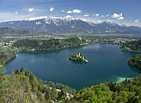

Disclaimer: These pages are not actively maintained, and some of the practical information on the site is out of date. I am working on a new version of the site that will focus more on my photos and memories of travel in Southeast Europe, and less on practical details that too easily become obsolete. In the meantime, please treat the information here with caution.
Lake Bled

Lake Bled from Osojnica
The Julian Alps
Slovenia's most spectacular scenery is to be found in the Julian Alps, where snowcapped summits tower over a technicolour landscape of green pastures, fields of dandelions, hayracks and churches. The settlements of Bled, Bohinj, and Kranjska Gora are all good bases for exploration.
Bled
Bled is one of those places that seem to have been designed specifically to appear on postcards. The smooth surface of the lake changes colour with the season, the weather, and the time of day; the spire of the island church is silhouetted against a background of snow, highlighted against forested hills, or shimmers as it is reflected in the lake. It may look like a chocolate box cover, but it's real.
The town of Bled, where most accommodation is located, is on the eastern side of the lake. It's probably Slovenia's biggest tourist resort, but like most things in Slovenia it isn't very big at all. The town's architecture ranges from functional to ugly, but it doesn't really matter - there is so much to enjoy in the surrounding area that you are unlikely to spend much time here. The main attraction near the town is Bled Castle, which overlooks the lake from the top of a cliff. The museum in the castle is only moderately interesting, but you have to buy the ticket if you want to enjoy the views from the terrace.
Vintgar
Your stay in Bled should include a walk around the shore of the lake - a completely flat 6km. The area around the lake is a hive of activity, especially at weekends - you are likely to be accompanied by cyclists, rollerbladers, and joggers on the shore, and rowers on the water. There are also several places to swim if you visit in summer. The Church of the Assumption on Bled Island exercises an almost hypnotic attraction as you walk around the lake - you can take a ride in a gondola to get there. If you are feeling energetic, I recommend the short but steep woodland path to Osojnica hill on the western shore: you will be rewarded with a panoramic view of the lake. If you thought Bled Castle was located high above the town, you might be surprised at how insignificant the castle hill looks from up here. The views are especially good in late afternoon when the sun is behind you, highlighting the Karavanke Alps in the background.
A number of other walks are possible in the foothills around Bled. One of the most popular is the gorge at Vintgar, which can be reached by walking north from Bled through the village of Podhom. A wooden walkway runs the length of the gorge, clinging to the sheer rock walls and crossing the green river several times. From the waterfall at the far end of the gorge, follow signs to the picturesque little chapel of Sv Katerina, from which the way back to Bled is obvious. The Pokljuka Gorge, to the west of Bled, is less spectacular than Vintgar but also far quieter; a bus to Krnica will take you most of the way there.
Lake Bohinj, from PePeč
Srednja Vas
Bohinj
Bohinj is Slovenia's other famous Alpine lake. Larger and closer to the high peaks than Bled, it has a much more rural, less resort-like feel, and a wider range of hiking options.
There is no one settlement called Bohinj - the name refers to whole valley. The village of Ribčev Laz at the lake's southeast corner is the closest thing to a "centre", at least as far as tourists are concerned. It has shops, accommodation, and a small beach - a lovely spot for a swim. The Church of St John the Baptist (Sv. Janez) is famous for its frescos, but it was closed for restoration when I visited in late 2006.
It is possible to walk all the way around Lake Bohinj. The path through the woods on the roadless northern shore is more interesting, so you may want to take the bus one way and hike back. A regular boat service also runs the length of the lake.
There is an almost limitless number of possible walking routes around Ribčev Laz, whether you want to tackle one of the approaches to Triglav, Slovenia's highest peak, or simply want to stretch your legs and potter around in the nearby villages. Don't miss the short walk up Peč, the wooded hill immediately to the east of the village, from where there is a great view of the spire of Sv. Janez with the lake behind it. You can continue eastwards along a wooded ridge to Rudnica (946 m), which is considered worthy of a visitor's book at the "summit" despite being dwarfed by the surrounding peaks. Return via the villages of Srednja Vas, Studor, and Stara Fužina - absurdly pretty and flowery villages even by the standards of a country full of pretty flowery villages. Another excellent walk from Stara Fužina follows the Mostnica stream northwards through a lovely little gorge, where green water plunges through carved rock formations - a very Slovenian scene. Continue throgh the Voje meadow to a waterfall.
There are even more walking options from Ukanc, at the western end of the lake. The most obvious target is the Savica Waterfall. The trail from the lake is relatively dull by Bohinj standards, so if you are there in summer you may want to take advantage of a bus to the Savica Hut. The waterfall is an impressive 60m vault down sheer cliffs. While it is certainly worth seeing, the viewing area is some distance from the falls and can get crowded, so the experience is not always entirely satisfactory. The rock walls that close off this end of the valley may look impassable, but a hiking trail from the Savica hut leads out of the valley to Dom na Komni, on a plateau to the west of the valley. The 50 switchbacks are energy-sapping but otherwise not difficult. If you come at the weekend expect to meet plenty of Slovenes of all ages from 6 to 76, who tend to rapidly overtake people from less outdoorsy nations. At the Dom na Komni mountain hut you can enjoy a hot drink and take in the views of the valley and high peaks; if you are suitably prepared you can continue on a variety of high trails. An easier way to get into the high mountains is to let a cable car whisk you from Ukanc to Vogel mountain, where you can enjoy great views of the valley.
Hayrack near Podkoren

Alpine apple near Kranjska Gora
Kranjska Gora
Kranjska Gora is a mountain resort in the Sava Valley, near the borders of both Italy and Austria. In winter it is Slovena's largest ski resort; in summer it is an excellent base for hiking. There is little of interest in the town itself but it's a good place to stock up on provisions. The flat valley bottom provides plenty of opportunities for gentle strolls. All of the places described here can be reached by walking on fairly easy paths from Kranjska Gora; hourly buses along the main valley road (west to Rateče, east to Gozd Martuljek and Mojstrana) will help you to avoid backtracking. Serious hikers can head for the peaks to the south of the town.
Little Jasna Lake is just 2km south of Kranjska Gora, cradled by towering peaks. It's guarded by a statue of Zlatorog, the legendary golden-horned chamois of Mount Triglav. A few kilometres to the west of Kranjska Gora, past the attractive village of Podkoren, is the Zelenci Nature Reserve. In the centre of a marshy area is the turquoise lake that marks the source of the Sava River; from here it flows across Slovenia and Croatia, eventually joining the Danube beneath Belgrade's Kalemegdan fortress. There is an observation tower beside the lake from where you can look down on the strange circular plant formations where the springs bubble up. On your way back through Podkoren look out for ostriches grazing in the meadows. Yes, I did say ostriches.
A lovely hike across the lower slopes of the Karavanke range starts by heading north and then east from Kranjska Gora. You pass through a mixture of woodland and open pasture; from the latter there are wonderful views across the valley to the Martuljek Range, an intimidating arc of summits that seem to generate their own weather systems. Look out for traditional hayracks and gaily painted beehives. At the village of Srednji Vrh the path turns south to Gozd Martuljek on the floor of the valley. This is the starting point for a walk to the Lower and Upper Martuljek Falls. There is a fair bit of climbing before reaching the upper falls, and the very last section requires concentration if it has been raining, but it is worth it. The cascade is just as impressive as the more famous Savica Waterfall in Bohinj, and it is possible to see it from up close.
It is also possible to use Kranjska Gora as a base for visiting the Vršič Pass.
Practicalities
See the FAQ for details of transport to Bled and Bohinj.
Buses leave Ljubljana for Kranjska Gora roughly hourly and take about two hours. On the way they stop at Jesenice, the nearest railway station and a convenient crossing point into Austria. See The Soča Valley for details of the The Vršič Pass.
If you want to base yourself in Ljubljana, Lake Bled can easily be visited as a day trip. While you could also get to Bohinj or Kranjska Gora and back in day, unless you are really short of time it's better to stay overnight and enjoy the peaceful rural atmosphere. All the places mentioned above have plentiful accommodation in hotels, guest houses, and private rooms. You are unlikely to be met Croatian-style with offers of rooms at bus stations, but if you haven't booked in advance rooms can be arranged through travel agencies.
Good walking/tourist maps of the area are available locally and in Ljubljana bookshops. The 1:30000 "Kranjska Gora" map is particularly useful - it shows 17 numbered walking trails with various levels of difficulty. Similar maps are available for Bled and Bohinj.
More photos of the Julian Alps in my Slovenia Galleries